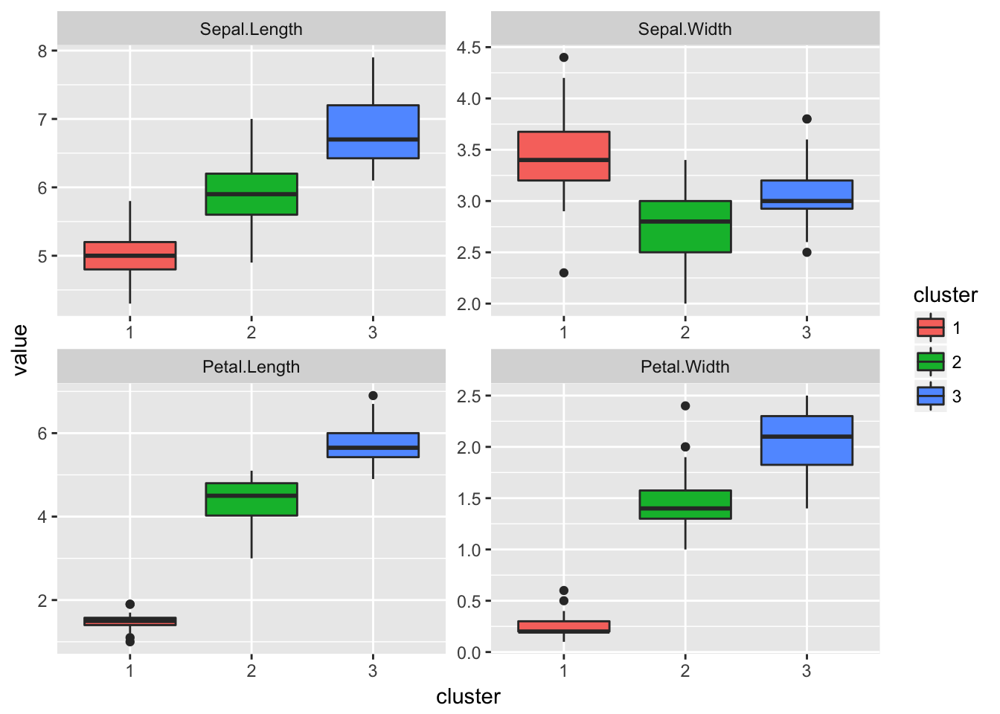
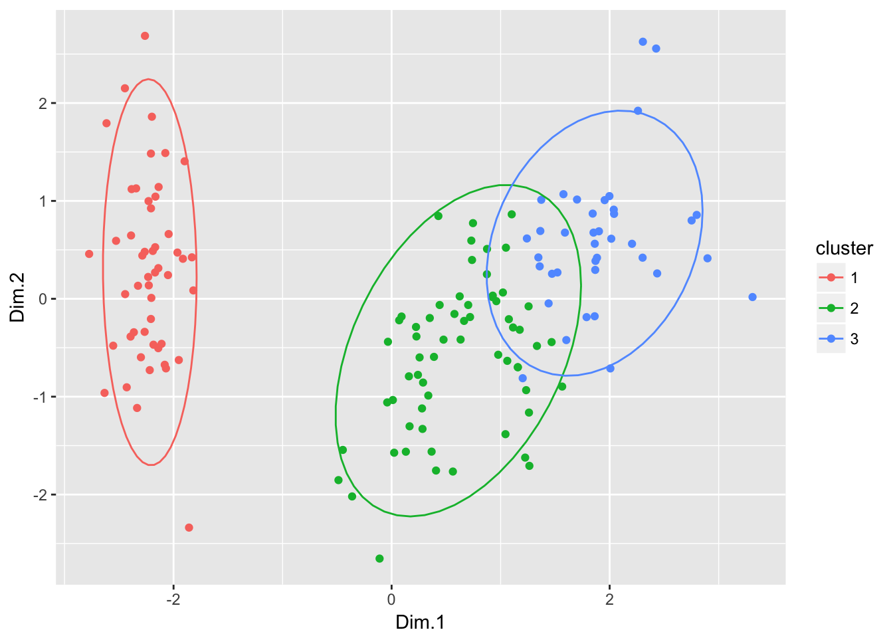

Direct Clustering
Statistical Programming using R
library(reshape2)
library(ggplot2)
library(FactoMineR)\(k\)-means
We use the kmeans() function, in the package stats (already installed and loaded in each R session).
Default use
Example with iris data and 3 clusters
res = kmeans(iris[-5], 3)
res## K-means clustering with 3 clusters of sizes 33, 21, 96
##
## Cluster means:
## Sepal.Length Sepal.Width Petal.Length Petal.Width
## 1 5.175758 3.624242 1.472727 0.2727273
## 2 4.738095 2.904762 1.790476 0.3523810
## 3 6.314583 2.895833 4.973958 1.7031250
##
## Clustering vector:
## [1] 1 2 2 2 1 1 1 1 2 2 1 1 2 2 1 1 1 1 1 1 1 1 1 1 2 2 1 1 1 2 2 1 1 1 2
## [36] 1 1 1 2 1 1 2 2 1 1 2 1 2 1 1 3 3 3 3 3 3 3 2 3 3 2 3 3 3 3 3 3 3 3 3
## [71] 3 3 3 3 3 3 3 3 3 3 3 3 3 3 3 3 3 3 3 3 3 3 3 2 3 3 3 3 2 3 3 3 3 3 3
## [106] 3 3 3 3 3 3 3 3 3 3 3 3 3 3 3 3 3 3 3 3 3 3 3 3 3 3 3 3 3 3 3 3 3 3 3
## [141] 3 3 3 3 3 3 3 3 3 3
##
## Within cluster sum of squares by cluster:
## [1] 6.432121 17.669524 118.651875
## (between_SS / total_SS = 79.0 %)
##
## Available components:
##
## [1] "cluster" "centers" "totss" "withinss"
## [5] "tot.withinss" "betweenss" "size" "iter"
## [9] "ifault"names(res)## [1] "cluster" "centers" "totss" "withinss"
## [5] "tot.withinss" "betweenss" "size" "iter"
## [9] "ifault"table(res$cluster)##
## 1 2 3
## 33 21 96res$size## [1] 33 21 96res$centers## Sepal.Length Sepal.Width Petal.Length Petal.Width
## 1 5.175758 3.624242 1.472727 0.2727273
## 2 4.738095 2.904762 1.790476 0.3523810
## 3 6.314583 2.895833 4.973958 1.7031250res$totss # I## [1] 681.3706res$tot.withinss # W## [1] 142.7535res$betweenss # B## [1] 538.6171Advanced use
With multiple randoms initialization, and on a standardized dataset
res.mult = kmeans(scale(iris[-5]), 3, nstart = 30, iter.max = 20)
res.mult## K-means clustering with 3 clusters of sizes 53, 47, 50
##
## Cluster means:
## Sepal.Length Sepal.Width Petal.Length Petal.Width
## 1 -0.05005221 -0.88042696 0.3465767 0.2805873
## 2 1.13217737 0.08812645 0.9928284 1.0141287
## 3 -1.01119138 0.85041372 -1.3006301 -1.2507035
##
## Clustering vector:
## [1] 3 3 3 3 3 3 3 3 3 3 3 3 3 3 3 3 3 3 3 3 3 3 3 3 3 3 3 3 3 3 3 3 3 3 3
## [36] 3 3 3 3 3 3 3 3 3 3 3 3 3 3 3 2 2 2 1 1 1 2 1 1 1 1 1 1 1 1 2 1 1 1 1
## [71] 2 1 1 1 1 2 2 2 1 1 1 1 1 1 1 2 2 1 1 1 1 1 1 1 1 1 1 1 1 1 2 1 2 2 2
## [106] 2 1 2 2 2 2 2 2 1 1 2 2 2 2 1 2 1 2 1 2 2 1 2 2 2 2 2 2 1 1 2 2 2 1 2
## [141] 2 2 1 2 2 2 1 2 2 1
##
## Within cluster sum of squares by cluster:
## [1] 44.08754 47.45019 47.35062
## (between_SS / total_SS = 76.7 %)
##
## Available components:
##
## [1] "cluster" "centers" "totss" "withinss"
## [5] "tot.withinss" "betweenss" "size" "iter"
## [9] "ifault"With defind starting points (here, the means of each specie)
m = aggregate(. ~ Species, iris, mean)
res.init = kmeans(iris[-5], m[-1])
res.init## K-means clustering with 3 clusters of sizes 50, 62, 38
##
## Cluster means:
## Sepal.Length Sepal.Width Petal.Length Petal.Width
## 1 5.006000 3.428000 1.462000 0.246000
## 2 5.901613 2.748387 4.393548 1.433871
## 3 6.850000 3.073684 5.742105 2.071053
##
## Clustering vector:
## [1] 1 1 1 1 1 1 1 1 1 1 1 1 1 1 1 1 1 1 1 1 1 1 1 1 1 1 1 1 1 1 1 1 1 1 1
## [36] 1 1 1 1 1 1 1 1 1 1 1 1 1 1 1 2 2 3 2 2 2 2 2 2 2 2 2 2 2 2 2 2 2 2 2
## [71] 2 2 2 2 2 2 2 3 2 2 2 2 2 2 2 2 2 2 2 2 2 2 2 2 2 2 2 2 2 2 3 2 3 3 3
## [106] 3 2 3 3 3 3 3 3 2 2 3 3 3 3 2 3 2 3 2 3 3 2 2 3 3 3 3 3 2 3 3 3 3 2 3
## [141] 3 3 2 3 3 3 2 3 3 2
##
## Within cluster sum of squares by cluster:
## [1] 15.15100 39.82097 23.87947
## (between_SS / total_SS = 88.4 %)
##
## Available components:
##
## [1] "cluster" "centers" "totss" "withinss"
## [5] "tot.withinss" "betweenss" "size" "iter"
## [9] "ifault"Clusters validation and representation
table(iris$Species, res.init$cluster)##
## 1 2 3
## setosa 50 0 0
## versicolor 0 48 2
## virginica 0 14 36pairs(iris[-5], col = rainbow(3)[res.init$cluster], pch = 19)
dres = data.frame(iris[-5], cluster = factor(res.init$cluster))
dres.melt = melt(dres, id.vars = "cluster")
ggplot(dres.melt, aes(cluster, value, fill = cluster)) +
geom_boxplot() +
facet_wrap(~ variable, scales = "free")
pca = PCA(iris, quali.sup = 5, graph = FALSE)
res.pca = data.frame(pca$ind$coord, cluster = factor(res.init$cluster))
ggplot(res.pca, aes(Dim.1, Dim.2, color = cluster)) +
geom_point() +
stat_ellipse()